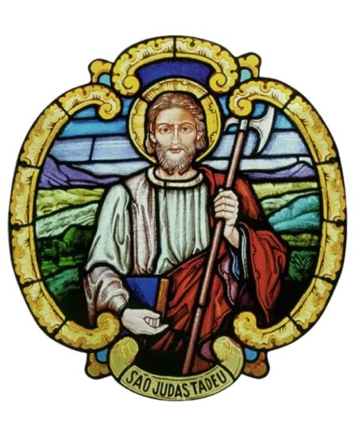

 | ||
PASTORAL DOS ACÓLITOS E COROINHAS - PSJTESCALA DO MÊS DE NOVEMBRO/2026A acólito C coroinha | ||
| 01/11/2026 - Solenidade de Todos os Santos | ||
|---|---|---|
| 7:30 | Coroinha | Função |
| Ana JúliaC | Missal/Tocha | |
| Pedro MiguelA | Microfone/Cruz | |
| José AntônioA | Turíbulo | |
| MagnoC | Naveta | |
| SofiaC | Credência/Tocha | |
| 18:30 | Coroinha | Função |
| PietroA | Missal/Tocha | |
| AlineC | Microfone/Cruz | |
| João PedroA | Turíbulo | |
| ElizaC | Naveta | |
| DouglasA | Credência/Tocha | |
| 02/11/2026 - Segunda-feira, Comemoração de Todos os Fiéis Defuntos | ||
| 7:30 | Coroinha | Função |
| YasminC | Missal | |
| LucasA | Microfone | |
| 03/11/2026 - Terça-feira, XXXI semana do Tempo Comum | ||
| 19:30 | Coroinha | Função |
| VitóriaA | Missal | |
| SofiaC | Microfone | |
| SaraA | Credência | |
| 05/11/2026 - Quinta-feira, XXXI semana do Tempo Comum | ||
| 19:30 | Coroinha | Função |
| Maria PaulaC | Missal | |
| YanC | Microfone | |
| Pedro LucianoA | Credência | |
| 06/11/2026 - 1ª Sexta do mês / dedicada ao Sagrado Coração de Jesus | ||
| 19:30 | Coroinha | Função |
| LucasA | Missal | |
| PietroA | Microfone | |
| 07/11/2026 - 1º Sábado do mês / dedicado ao Imaculado Coração de Maria | ||
| 17:00 | Coroinha | Função |
| YanC | Missal | |
| ElizaC | Microfone | |
| Ana JúliaC e YasminC | Tochas | |
| <Ministro> | Cruz | |
| 19:30 | Coroinha | Função |
| LuanA e DouglasA | Cerimoniários | |
| 08/11/2026 - XXXII Domingo do Tempo Comum | ||
| 7:30 | Coroinha | Função |
| AllanaA | Missal/Tocha | |
| MileneC | Microfone | |
| MiguelA | Turíbulo | |
| Pedro MiguelA | Naveta | |
| José AntônioA | Credência/Tocha | |
| Maria PaulaC | Cruz | |
| 18:30 | Coroinha | Função |
| AlineC | Missal/Tocha | |
| João PedroA | Microfone/Cruz | |
| VitóriaA | Turíbulo | |
| Pedro HenriqueC | Naveta | |
| Luiz GustavoC | Credência/Tocha | |
| 10/11/2026 - Terça-feira, São Leão Magno, papa e doutor da Igreja | ||
| 19:30 | Coroinha | Função |
| DouglasA | Missal | |
| MagnoC | Microfone | |
| 12/11/2026 - Quinta-feira, São Josafá, bispo e mártir | ||
| 19:30 | Coroinha | Função |
| Pedro LucianoA | Missal | |
| YasminC | Microfone | |
| 15/11/2026 - XXXIII Domingo do Tempo Comum | ||
| 7:30 | Coroinha | Função |
| MileneC | Missal/Tocha | |
| AllanaA | Microfone/Cruz | |
| SaraA | Turíbulo | |
| Maria PaulaC | Naveta | |
| MagnoC | Credência/Tocha | |
| 18:30 | Coroinha | Função |
| Pedro OliveiraC | Missal/Tocha | |
| Luiz GustavoC | Microfone | |
| DouglasA | Turíbulo | |
| AlineC | Naveta | |
| Pedro HenriqueC | Credência/Tocha | |
| YanC | Cruz | |
| 17/11/2026 - Terça-feira, Santa Isabel da Hungria | ||
| 19:30 | Coroinha | Função |
| SofiaC | Missal | |
| VitóriaA | Microfone | |
| Ana JúliaC | Credência | |
| 19/11/2026 - Quinta-feira, XXXIII semana do Tempo Comum | ||
| 19:30 | Coroinha | Função |
| SaraA | Missal | |
| Pedro LucianoA | Microfone | |
| LucasA | Credência | |
| 22/11/2026 - Solenidade de Nosso Senhor Jesus Cristo, Rei do Universo | ||
| 7:30 | Coroinha | Função |
| MiguelA | Missal/Tocha | |
| José AntônioA | Microfone | |
| Pedro MiguelA | Turíbulo | |
| ElizaC | Naveta | |
| AllanaA | Credência/Tocha | |
| MileneC | Cruz | |
| 18:30 | Coroinha | Função |
| Luiz GustavoC | Missal/Tocha | |
| Pedro HenriqueC | Microfone | |
| João PedroA | Turíbulo | |
| Pedro OliveiraC | Naveta | |
| AlineC | Credência/Tocha | |
| PietroA | Cruz | |
| 24/11/2026 - Terça-feira, Santo André Dung-Lac e companheiros, mártires | ||
| 19:30 | Coroinha | Função |
| MagnoC | Missal | |
| Ana JúliaC | Microfone | |
| VitóriaA | Credência | |
| 26/11/2026 - Quinta-feira, XXXIV semana do Tempo Comum | ||
| 19:30 | Coroinha | Função |
| Pedro LucianoA | Missal | |
| Maria PaulaC | Microfone | |
| YasminC | Credência | |
| 29/11/2026 - I Domingo do Advento | ||
| 7:30 | Coroinha | Função |
| José AntônioA | Missal/Tocha | |
| SaraA | Microfone | |
| AllanaA | Turíbulo | |
| MileneC | Naveta | |
| Pedro MiguelA | Credência/Tocha | |
| SofiaC | Cruz | |
| 19:30 | Coroinha | Função |
| Pedro HenriqueC | Missal/Tocha | |
| ElizaC | Microfone | |
| PietroA | Turíbulo | |
| João PedroA | Naveta | |
| YanC | Credência/Tocha | |
| Luiz GustavoC | Cruz | |
Orientações:
| ||